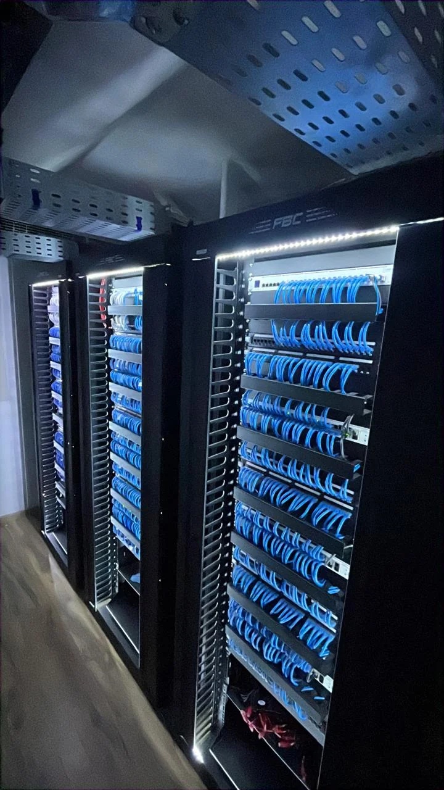
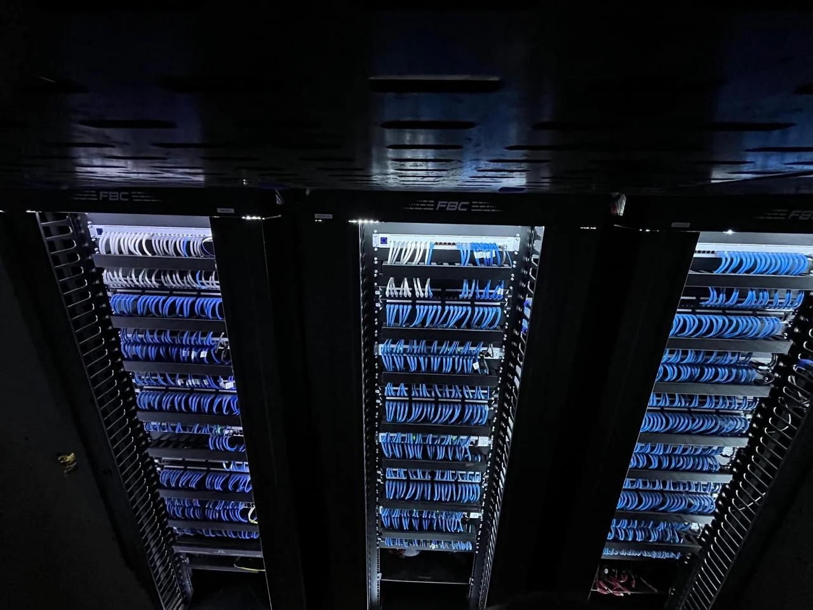
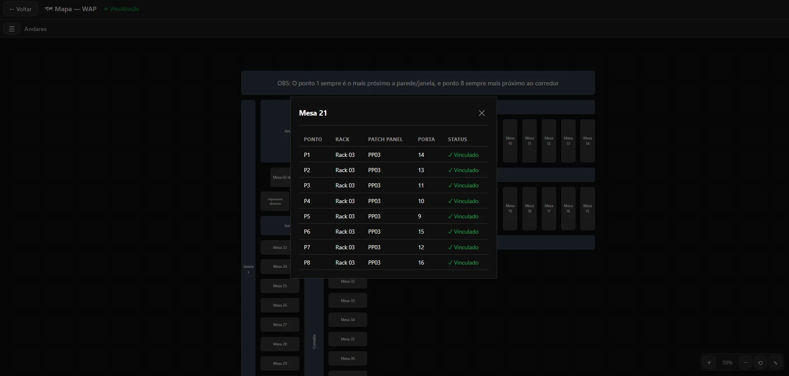

Reestruturação datacenter WAP
- Reestruturação e organização completa dos racks do datacenter.
- Remontagem completa dos patch panels.
- Organização do cabeamento estruturado nos racks.
- Mapeamento de todos os pontos de rede nas mesas de trabalho.
- Certificação funcional de todos os pontos de rede.


Sistema Topologia
Criação do sistema para visualização completa do mapeamento dos pontos de rede da empresa.
Acessar sistema Topologia